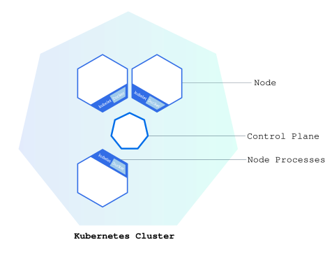
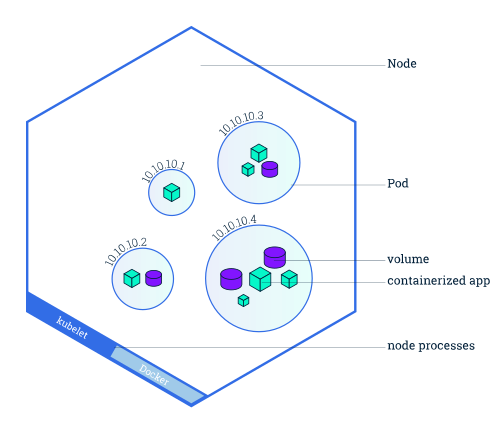
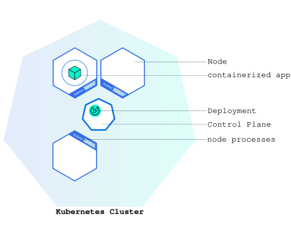
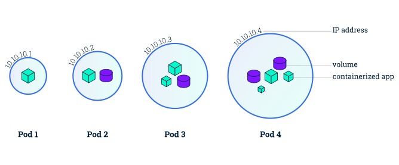
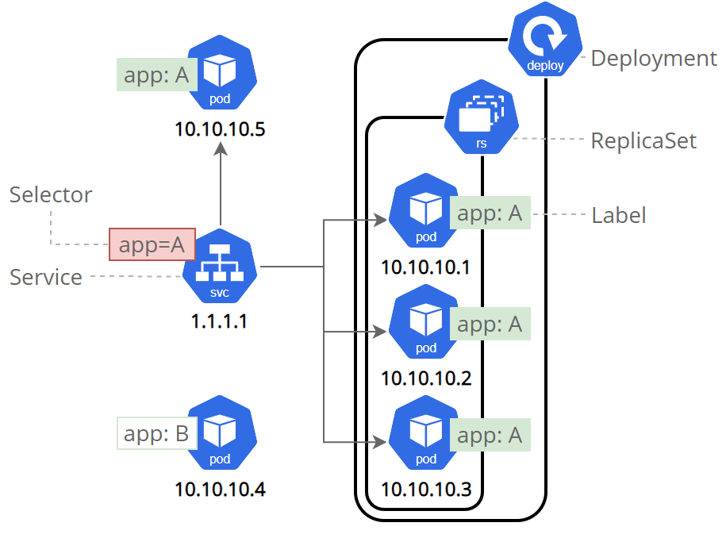

How to access and use the course Kubernetes cluster
kubectl and Helm, add your kubeconfig file, and check that
you can connect (steps 1–3 below).
kubectl
and helm clients on your own machine.| Scope | Access |
|---|---|
| Your own namespace | Full access to all resource types: get, list, watch,
create, update, patch, delete. |
| The rest of the cluster | Read-only: get, list, watch (e.g. kubectl get nodes).
|
-n <namespace> for
your own resources.kubectl port-forward to reach your services from your laptop.
Ingress resources and NodePort/LoadBalancer services will not make your application
reachable.kubectl and helm.
GitOps operators such as Argo CD or Flux need cluster-wide permissions and cannot be installed.secretKeyRef), never as plain environment
values or in ConfigMaps.
| OS | kubectl | Helm |
|---|---|---|
| macOS (Homebrew) | brew install kubectl |
brew install helm |
| Windows (scoop, recommended) | scoop install kubectl |
scoop install helm |
| Windows (winget) | winget install -e --id Kubernetes.kubectl |
winget install Helm.Helm |
| Linux (snap) | sudo snap install kubectl --classic |
sudo snap install helm --classic |
Check the installation:
kubectl version --client
helm versionOptional: kubectx (brew install kubectx / scoop install kubectx)
makes it easy to switch between several kubeconfigs.
kubectl reads its connection and authentication details from ~/.kube/config by default.
Save the kubeconfig file you received as ~/.kube/config (or merge it into your existing file if you
already use other clusters).
mkdir -p ~/.kube
cp <your-kubeconfig>.yaml ~/.kube/configAlternatively, point kubectl to the file for the current terminal session:
export KUBECONFIG=/path/to/<your-kubeconfig>.yamlOn Windows (PowerShell):
mkdir $HOME\.kube -Force
copy <your-kubeconfig>.yaml $HOME\.kube\config
# or, for the current session only:
$env:KUBECONFIG = "C:\path\to\<your-kubeconfig>.yaml"To reach the cluster you must be connected to eduroam, logged in with your Aalborg University student account. Test your configuration:
kubectl get nodes
kubectl get podsThe first command should list the cluster's nodes, and the second should report that no resources were found in your namespace. If you get an error, check that you are on eduroam with your Aalborg University student account and that your kubeconfig is in place.
Off campus: connect through the university VPN, then use kubectl as usual. If you
cannot reach the course cluster, most
exercises also run on a local Kubernetes cluster on your laptop (e.g. kind, which runs on Docker).
Kubernetes is a production-grade, open-source platform that orchestrates the placement (scheduling) and execution of application containers within and across computer clusters.
A cluster consists of a control plane that coordinates all activities, and one or more nodes – worker machines that run your applications. Each node is managed by the control plane and can host many pods.


A Deployment is the recipe for running your application: which container image, how many replicas, which configuration. The control plane continuously keeps the actual state equal to the desired state and replaces pods that fail (self-healing). A Pod is the smallest deployable unit: a logical host for one or more containers that share storage and network. Pods are short-lived, and their IP addresses change when they are rescheduled.


A Service gives a set of pods a stable name and address, providing load balancing and service
discovery. It finds its pods through labels (key-value pairs on resources) and
selectors. Service types: ClusterIP (default, reachable only inside the cluster),
NodePort, LoadBalancer and ExternalName. On the course cluster, use
ClusterIP and reach your service with kubectl port-forward. Inside your namespace, a
service is reachable by its name, e.g. http://my-service:8080.

Helm is a package manager for Kubernetes. A chart is a package of Kubernetes
resources that you configure through values. An installed chart is called a release.
| Command | What it does |
|---|---|
kubectl apply -f app.yaml | Create or update the resources in a manifest |
kubectl get pods / services / all | List resources in your namespace |
kubectl describe pod <pod> | Show details and events (useful when a pod does not start) |
kubectl logs <pod> | Show a container's logs (add -f to follow) |
kubectl port-forward svc/<service> 8080:8080 | Forward
localhost:8080 to a service in the cluster |
kubectl scale deployment/<name> --replicas=5 | Scale a deployment manually
(or edit it with kubectl edit deployment/<name>) |
kubectl exec -it <pod> -- /bin/sh | Open an interactive shell in a running container |
kubectl run tmp --rm -it --image ubuntu -- bash | Start a temporary pod for debugging from inside the cluster; deleted when you exit |
kubectl cp file.txt <pod>:/file.txt | Copy a file into a container |
kubectl delete -f app.yaml | Delete the resources in a manifest |
helm install <release> <chart> | Install a Helm chart |
helm upgrade <release> <chart> --set key=value | Change the configuration of a release |
helm list / helm status <release> | List releases / show the status of one |
helm uninstall <release> | Remove a release and its resources |
kubectl get events --sort-by=.lastTimestamp | Show recent events in your namespace (scheduling, image pulls, crashes) |
kubectl rollout history deployment/<name> / kubectl rollout undo
deployment/<name> | Show revisions of a deployment / roll back to the previous one |
helm rollback <release> <revision> | Roll a Helm release back to an earlier revision |
kubectl auth can-i --list | Show what you are allowed to do in your namespace |
Use this exercise to get familiar with the cluster before the reference project. Download the files first:
hello-kubernetes.yaml. Identify the two resources (separated by ---), the
labels and selectors, and how the environment variables are injected with fieldRef
(metadata.namespace, metadata.name, spec.nodeName).kubectl apply -f hello-kubernetes.yaml
kubectl get pods
kubectl get serviceshttp://localhost:8080 in your browser. Refresh a few times:
the page shows which pod, namespace and node handled your request.
kubectl port-forward svc/hello-kubernetes 8080:8080kubectl scale deployment/hello-kubernetes --replicas=5
kubectl get pods
kubectl scale deployment/hello-kubernetes --replicas=3cat server.js), and exit:
kubectl exec -it pods/<name-of-pod> -- /bin/shkubectl run busybox --rm -it --image busybox -- sh
wget -qO- hello-kubernetes:8080wget -qO- -T 5
hello-kubernetes.<their-namespace>:8080 – services in other namespaces are not reachable,
so the request times out. Note that you cannot install packages inside a running pod (e.g. apt
install), because pods have no internet access.
kubectl run ubuntu -it --image ubuntu -- bash
kubectl cp README.md ubuntu:/README.md
kubectl attach ubuntu -c ubuntu -i -tClusterIP service:
helm install hello-kubernetes-helm ./hello-kubernetes-1.0.0.tgz --set service.type=ClusterIP
helm status hello-kubernetes-helm
kubectl get pods,serviceshello-kubernetes-hello-kubernetes-helm on port 80.
Connect with kubectl port-forward svc/hello-kubernetes-hello-kubernetes-helm 8081:80.
helm upgrade hello-kubernetes-helm ./hello-kubernetes-1.0.0.tgz \
--set service.type=ClusterIP --set deployment.replicaCount=5
helm listkubectl delete -f hello-kubernetes.yaml
helm uninstall hello-kubernetes-helm
kubectl delete pod ubuntu
kubectl get allkubectl get all shows what is running).pip install
or apt install at runtime will fail.kubectl describe pod, kubectl get events and
kubectl logs before asking for help.| Symptom | Likely cause |
|---|---|
ImagePullBackOff | Wrong image name or tag, or the image is private (GitHub Container Registry packages are private by default). Public registries may also rate-limit pulls; retry later. |
exec format error | The image was built for ARM (e.g. on an Apple Silicon Mac).
Rebuild with docker buildx build --platform linux/amd64. |
CrashLoopBackOff | The container starts and exits. Read kubectl logs
<pod> --previous; often a missing file, a missing environment variable, or a download that
needs internet access. |
Pod stays Pending | Not enough free CPU or memory on the shared cluster (lower your requests, or delete
what you no longer use), or a volume that cannot be bound. See kubectl describe pod. |
| Service names stop resolving | A NetworkPolicy blocks DNS. Allow egress on port 53 to the cluster DNS. |
| Port-forward works for HTTP but not for Kafka | The broker advertises its in-cluster address. Run clients as pods in your namespace. |
The hello-kubernetes application and Helm chart are by Paul Bouwer (MIT License; see LICENSE). Diagrams are from the Kubernetes Basics tutorial, © The Kubernetes Authors (CC BY 4.0).